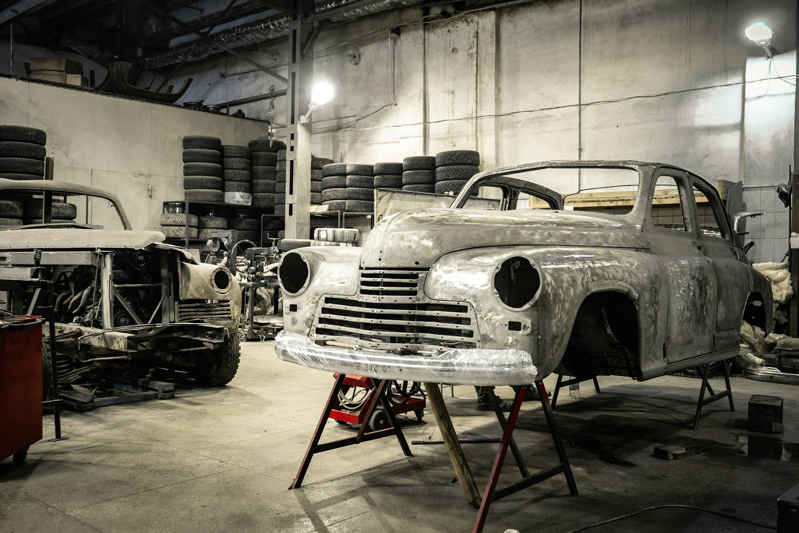

01
엔진오일 교환
오일과 필터를 함께 갑니다. 운전석 문 안쪽에 다음 교환 시기를 적은 스티커를 붙여 드리는데, 주행거리와 날짜를 같이 적어 둘 중 먼저 오는 쪽을 보시면 됩니다.

경정비와 일반정비를 함께 봅니다.
아래는 자주 들어오는 작업입니다. 목록에 없는 증상도 전화로 말씀해 주시면 가능한지 먼저 알려 드립니다.
01
엔진오일, 에어컨 필터, 와이퍼, 배터리를 바꿉니다. 예약하면 40분 안에 끝나는 작업이 대부분이라 차를 세워 두고 근처 카페에서 기다리시는 분이 많습니다.
공임 20,000원부터
02
브레이크 패드와 디스크, 캘리퍼를 봅니다. 패드 잔량은 탈거하기 전에 사진으로 찍어 보내 드리고, 디스크를 깎을지 갈지는 두께를 재서 정합니다.
공임 40,000원부터
03
타이어를 갈면 휠 밸런스를 잡습니다. 한쪽만 닳는 차량은 얼라인먼트를 같이 보는데, 연석에 자주 붙이거나 과속방지턱을 세게 넘긴 차에서 주로 나타납니다.
공임 60,000원부터
04
쇼크업소버, 로어암, 부싱 계통을 점검합니다. 요철을 넘을 때 나는 소리는 리프트에 올려 하나씩 눌러 봐야 원인이 잡히고, 끝내 못 찾으면 공임을 받지 않습니다.
점검 후 산정
05
판금과 도색은 협력 공업사로 보냅니다. 맡기신 뒤에는 어느 단계까지 갔는지 정비소에서 대신 확인해 알려 드리고, 보험 접수도 여기서 넣습니다.
보험 처리 또는 견적
지난 1년 동안 입고 건수가 많았던 순서입니다.
01
오일과 필터를 함께 갑니다. 운전석 문 안쪽에 다음 교환 시기를 적은 스티커를 붙여 드리는데, 주행거리와 날짜를 같이 적어 둘 중 먼저 오는 쪽을 보시면 됩니다.
02
패드 잔량이 3mm 아래면 교체를 권합니다. 디스크 상태도 같이 재 봅니다.
03
전압과 내부 저항을 측정해 남은 수명을 숫자로 보여 드립니다. 저항이 올라간 배터리는 평소에 시동이 한 번에 걸리다가도 영하로 떨어지면 못 버티는 경우가 많습니다.
04
교체 후 휠 밸런스를 잡습니다. 위치 교환은 1만km마다 권합니다.
05
진단기로 고장 코드를 읽고 어떤 계통인지 먼저 알려 드립니다. 코드 하나에 원인이 여럿인 경우가 많아 수리 여부는 실제 부품을 확인한 뒤에 정합니다.
06
여름과 겨울 전에 많이 들어옵니다. 빙점 측정 결과를 종이에 적어 드립니다.
아래는 국산 승용차 기준 공임입니다. 부품값은 별도이고 차종에 따라 달라집니다.
| 작업 | 공임 | 소요 시간 |
|---|---|---|
| 시간당 표준 공임 | 48,000원 | 작업 시간 단위 계산 |
| 엔진오일과 필터 교환 | 20,000원 | 약 30분 |
| 브레이크 패드 교체(앞) | 40,000원 | 약 50분 |
| 배터리 교체 | 10,000원 | 약 15분 |
| 타이어 교체와 밸런스(4짝) | 60,000원 | 약 60분 |
| 휠 얼라인먼트 | 70,000원 | 약 60분 |
| 경고등 진단 스캔 | 30,000원 | 약 20분, 수리 시 면제 |
표시 금액은 부가가치세 포함이며 국산 승용차 기준입니다. 정확한 금액은 차량 상태와 차종, 부품 종류에 따라 달라지므로 점검 뒤 견적을 문자로 보내 드립니다. 수입차와 대형 차량은 공임이 올라갑니다. 자동차관리법에 따라 작업 전 견적서를, 출고 시 정비명세서를 드립니다.
1단계
전화 예약
차종과 연식, 증상을 확인합니다.
2단계
입고와 점검
리프트에 올려 상태를 봅니다.
3단계
견적 문자 발송
부품값과 공임을 나눠 적습니다.
4단계
작업과 출고
명세서와 교체 부품을 함께 확인합니다.
차종과 연식, 증상을 알려 주시면 부품 재고를 먼저 확인합니다. 엔진오일 교환처럼 짧은 작업은 예약 시간에 맞춰 리프트를 비워 둡니다.